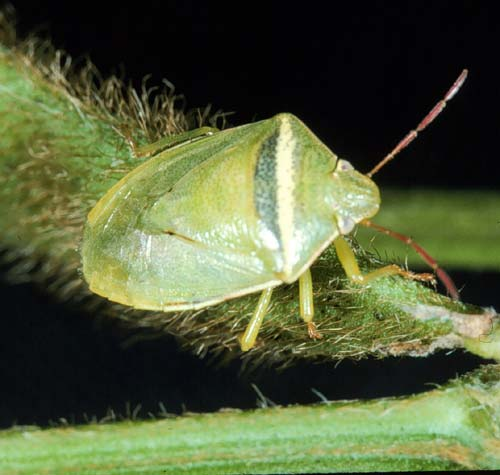

<div class="modal fade" id="myModal" tabindex="-1" role="dialog" aria-labelledby="myModalLabel" aria-hidden="true">
                                <div class="modal-dialog">
                                    <div class="modal-content">
                                        <div class="modal-header">
                                            <button type="button" class="close" data-dismiss="modal" aria-hidden="true">&times;</button>
                                            <h4 class="modal-title" id="myModalLabel">Kepik Hijau Pucat</h4>
                                        </div>
                                        <div class="modal-body">
                                            
                                            <p> </p>
											Nama latin : <em>Piezodorus hybneri</em><br>
                                            Jenis serangga : Kepik<br>
                                            Bagian tanaman yang diserang : Polong<br>
                                            Fase tanaman yang diserang : Berbunga (31 - 50 hari setelah tanam), Pertumbuhan polong (51 - 70 hari setelah tanam), Pemasakan polong (71 hari setelah tanam - panen)<br>
                                            Tempat peletakan telur : Atas daun, bawah daun, batang dan rumput<br>
                                            Ukuran tubuh nimfa / larva : 1.1 - 8.59 mm<br>
                                            Ukuran tubuh imago : 8.8 - 12 mm<br>
                                            Warna tubuh imago : Hijau pucat<br>
                                            Fase metamorfosis : Tidak Sempurna<br>
                                            Fase hama yang menyerang tanaman : Imago dan Nimfa / Larva<br>
                                            Gejala : Polong dan biji kempis, polong mengering, ada bintik hitam di polong, dan penurunan kualitas biji<br>
                                            <p> </p>
                                            Cara Pengendalian :<br>
                                            <ul>
                                            <li>Tanam serempak</li>
											<li>Pergiliran tanaman</li>
                                            <li>Tanam tanaman perangkap <em>Sesbania rostrata</em></li>
                                            <li>Semprot insektisida</li>
                                            
                                            </ul>
											<p> </p>
											Jenis Insektisida :<br> 
											<ul>
											<li>Atabron 50 EC</li>
											<li>Ambush 2 EC</li>
											<li>Bassa 500 EC</li>
											<li>Corsair 100 C</li>
											<li>Decis 2.5 EC</li>
											<li>Matador 25 EC</li>
											<li>Larvin 75 WP</li>
											</ul>
                                        </div>
                                        <div class="modal-footer">
                                            <button type="button" class="btn btn-default" data-dismiss="modal">Close</button>
                                            
                                        </div>
                                    </div>
                                    <!-- /.modal-content -->
                                </div>
                                <!-- /.modal-dialog -->
                            </div>